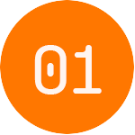
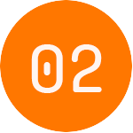

Protocolo de uso Laser Smile Odonto
Preparamos exclusivamente este Protocolo de Uso do equipamento LASER SMILE ODONTO.

Laser de baixa potência
Grandezas físicas. Comprimento de onda....

Biossegurança
Procedimentos, dosimetria...
Parâmetros e Metodologias
Métodos, indicações, associações...
Terapia ILIB
(Intravascular Laser Irradiation of Blood)
Protocolos
Híbridos, técnicos e de clareamento.